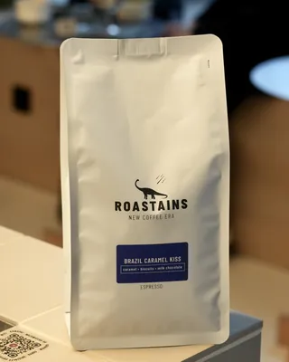

Brazylia Caramel Kiss
kawa ziarnista specialty do espresso
Brazylijska kawa o deserowych nutach karmelu, herbatników i mlecznej czekolady. Doskonała do espresso i kaw mlecznych. W COPPA polecamy ją szczególnie do cappuccino, w którym mleko podkreśla naturalną karmelową słodycz.
- 250 g 56 zł
- 500 g 89 zł
- 1000 g 159 zł